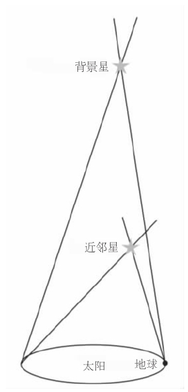
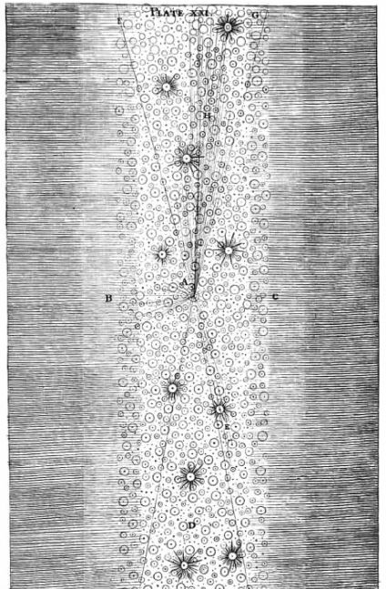
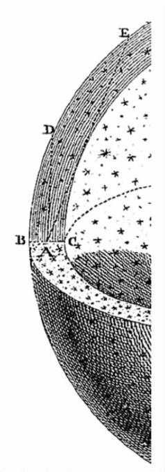
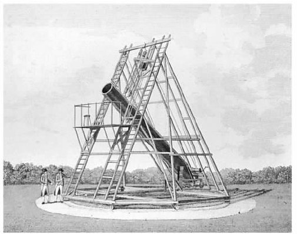
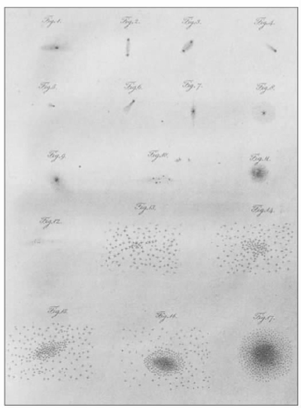
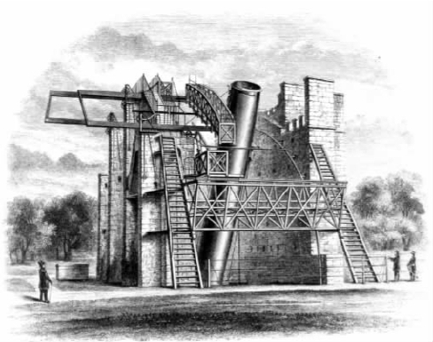

直到1572年，天王星家才把“固定的”恒星——不只是在位置上，而且在亮度上都是固定不变的——视为行星运动的背景。当然，事实上恒星具有越过天空的独特或“固有”的运动，但是星际距离是如此之大，以至于即使是发自最近恒星的光也要几年后才会到达地球。结果，自行几乎是不可察觉的，除非在很长的时标上；因而，文艺复兴时期观测者所见的恒星的位置与托勒密赋予它们的位置没有什么不同（除了岁差的总效应之外）。
没有注意到亮度的变化可能是更令人惊讶的。虽然大多数恒星，比如太阳，几乎是不变的，少数恒星被一个伴星交食后亮度衰减，其他恒星则会经受较大的物理改变，无论是规则的还是不规则的，从而发生亮度变化。但是这些变星中没有一颗能亮到使其亮度变化让中世纪观测者相信天区是变化的。当你已经知道改变已是不可能时，为什么要寻找改变呢？
大自然唤醒了我们，1572年新星的出现（正如第谷所见，参见第四章）使我们相信了恒星是会变的，从而燃起了我们对它的兴趣。另一颗这样的新星则在1604年爆发，它在欧洲造成了惊恐和沮丧。8个世纪以来的第一次，缓慢运动的行星木星和土星在黄道带致命的“火焰区”相合；新星在它们中间闪耀，火星也参与其中——能想象到的最不祥的占星事件。
现在没有人怀疑天空会发生变化。的确，还有人谈到出现于鲸鱼座的另一颗新星，但是它要暗一些，在它暗淡下去和消失之前，只有一个观测者见到过它。1638年，鲸鱼座成为第二颗新星的宿主（或者说，看起来是如此）；像它的前任那样，它逐渐变暗并且消失——但是在它的发现者能够发表他的描述之前，它又重现了，这使他很惊讶。它继续每隔一段时间就消失和重现，1667年，伊斯梅尔·布里奥（1605—1694）宣布这颗“奇妙的星”每隔11个月达到其最大亮度；它的运动在某种程度上是可以预报的，因而是有规律的。
布里奥继续给出了变星的一个物理解释，那是一个非常巧妙的解释。他指出，太阳黑子的变化表明，太阳本身——此时仅仅被认为是最靠近我们的恒星——严格说来是变化的。而且太阳黑子的转动证明了太阳整体是自转的，其他恒星无疑亦是如此。然后设想一颗布满黑斑而不仅仅是太阳黑子的自转恒星；每当一块黑斑朝向我们时，我们将看到恒星的亮度减弱，这将随着恒星的每一次自转而有规律地发生。但若黑斑本身像黑子那样不规则地变化，则将造成亮度的不规则变化。用这种方式，布里奥能够说明规则的和不规则的变化。的确，他成功地从物理学角度解释了变星，天文学家心满意足地宣布了他们关于特殊恒星变化的发现。但是，这些宣布既不易被证实又不易被证伪；被说成是变星的天体的数目激增，整个论题可说是声名扫地。
到了18世纪末，当威廉·赫歇尔发表了一系列《恒星的比较亮度表》时，核实这样的宣布的任务就被简化了。在这些表中，赫歇尔将恒星与其附近具有相似亮度的恒星仔细地比对，如此一来，其中一颗恒星的变化将会扰动已发表的比较星从而显露其自身。赫歇尔推广了一种方法，按亮度等级排列恒星的序列，这个方法在18世纪80年代早期被两位业余天文学爱好者所发展，他们是英格兰北部约克市的一对邻居。爱德华·皮戈特（1753—1825）是一位有造诣的天文观测家的儿子；他的年轻朋友约翰·古德里克（1764—1786）是个聋哑人，他热情地接受了邀请，参与了变星的研究。
他们详细研究的恒星之一是大陵五，一个世纪之前，它曾有两次被报告为四等星，而不是通常的二等星。1782年11月7日，大陵五仍是二等星，但5天后，它减弱为四等，次夜，又变回到二等。如此速率的变化前所未有，所以这两人一直监视这颗恒星。12月28日，他们的努力得到了回报：黄昏时他们见到的大陵五为三等或四等星，但就在他们眼前，它增亮为了二等。皮戈特马上怀疑大陵五正被一颗卫星所食，次日他向古德里克送出一份报告，在那里面，他假设在11月12日至12月28日间的46天里，卫星完成了一个或两个轨道，并由此计算出了这颗假想中的卫星未来的轨道。事实上，在即将到来的几个月中，他们的观测表明，卫星——如果的确是这种解释——绕大陵五运转一周不足3天。对天文学来说，这是一个迄今未知的现象。
皮戈特慷慨地将向英国皇家学会正式报告之事留给了他的残疾朋友，但十多岁的古德里克只是说交食理论为可能的原因之一，和传统的黑斑说一样。皮戈特事实上是对的——大陵五的确是被一颗伴星所食——但是这两位朋友最终又回到了黑斑解释，可能是因为他们错误地认为他们看到了大陵五光变曲线中的不规则性，或是因为他们发现的另外3颗短周期变星不能用交食理论说明。事实上，其中两颗是造父变星，即迅速升至最大亮度而后缓慢变暗的脉动恒星，有一天它们会被埃德温·哈勃和他的同时代人用作距离指示物。
结果是18世纪天文学贡献出了一族新的变星，它们的周期只有几天，但在理解这些现象的物理原因方面，进展甚微。
皮戈特和古德里克曾见到大陵五的亮度在几小时内发生变化。相比之下，位置的变化则要在很长时间后才能观测到。相对而言，只有很少的恒星具有高达每年1弧秒的自行，已知最大的自行也只是刚刚超过10弧秒。这样的运动只有在比较了恒星的现在位置与记录在星表中的早先位置后才能发觉；在其他条件相同时，距离早期星表的时间间隔越长，得到的自行值就越精确。但不幸的是，其他条件并非相同；当我们沿时间回溯时，精度标准下降，早期星表中任何不精确的恒星位置将会影响所得出的自行精度。
古代唯一的星表在托勒密的《天文学大成》中；1718年爱德蒙·哈雷用这张星表定出黄道倾角——黄道对赤道倾斜的角度——的变率时，认识到3颗恒星定然是相互独立地运动着。
此时哈雷进一步研究这个问题就不容易了，因为过去唯一一张有价值的星表就是第谷的星表了。它比托勒密的星表要精确得多；但是它距此时只有一个世纪多一点，并且它的作者只是粗糙地处理折射，即星光进入地球大气后的弯曲（它影响了恒星在天空中的观测位置）。不过，未来的几代人能够用上约翰·弗拉姆斯蒂德在格林尼治精心编制的《不列颠星表》作为时间的起点去量度恒星的自行了。
或许只是看起来如此。但是后来在1728年，詹姆斯·布拉德雷（1693—1762）宣布了一个完全出人意料的复杂情况：“光行差”。光的速度很大，但是，正如上世纪晚期对木星卫星交食的观测所表明的，它仍然是有限的。当木星靠近地球，携有交食信息的光不必走那么远时，交食会提前发生。当木星离开太阳背面时，交食会推迟发生。
比较起来，地球在其绕日轨道上的速度是小的，但它又大到足以影响恒星的观测位置。在观测者看来，一颗恒星位于星光到达的方向上；这个方向随着地球运动方向的改变而（微微地）改变——如同事实上垂直落下的雨似乎从我们向之运动的方向上打在我们的脸上一样。
我们将在本章的后面看到布拉德雷是怎样发现了光行差。他的发现暗示，即使是用《不列颠星表》作自行测量的时间起点也是有严重缺陷的。当布拉德雷在1748年宣告地球的轴有“章动”或摆动时，该星表的另一个欠缺也暴露了出来。这是因为地球不是一个理想的球体，太阳和月球对地球的引力拉动有变化，并且这也引起了用于测量恒星位置的坐标系的运动。
布拉德雷本人在1742年成为了皇家天文学家。从1750年起直到他的健康开始衰退为止，他执行着一项观测计划，在其中他谨小慎微地记录着能够影响恒星观测位置的所有情况。但是他自己没有能来得及“归算”他的观测——作出为导出他的恒星的真正位置所需的计算。归算直到1818年才完成，当时伟大的德国数学家弗里德里希·威尔海尔姆·贝塞尔（1784—1846）出版了贴切命名的《天文学基础》，该书包含了1755年超过3000颗恒星的位置，那时正是布拉德雷观测计划中一个方便的时间。从那以后，19世纪的天文学家能够将一颗恒星的现时位置与《基础》中给出的该恒星在1755年的位置作比较，从而确定每年运动着的恒星在这段时间间隔中穿越天空有多远。
布拉德雷自己在1748年指出，所有的自行都是相对的：我们并没有观测到一颗恒星在绝对空间中怎样运动，而只是观测到它相对于我们如何运动。12年之后，图比亚斯·迈耶尔讨论了这一点的含义。如果除了太阳以外，每颗恒星都是静止的，则太阳系通过空间的运动会向我们揭示其在恒星之间的（视）运动样式。所以，已知自行中的任一样式可能反映了太阳系的一种运动；剩余运动将会是单颗恒星本身的剩余运动。
一个现代的类比阐明了这样一种样式是怎样的。如果在城市里夜间驾驶一辆小汽车，一簇远处的车灯似乎合成一束，但当我们靠近时，它们似乎又分开了。同时，我们左边的街灯似乎在反时针运动，而我们右边的街灯似乎在顺时针运动。
迈耶尔没有在他所知的（不可靠的）自行中找到这样的样式，但在1783年，威廉·赫歇尔——有一段时间完全扑在他的书桌上工作——相信他已经找到了一种样式，这种样式意味着太阳系正向着武仙座运动。今天，无人怀疑他的结论，但是他的论据经不起仔细的调查。一代人以后，贝塞尔发现了找出可靠自行的方法，当时的那几个月他的《基础》正在印刷，并且他拥有了阐明任何一种运动样式所需要的全部数学才能，但是他只留下了一片空白。
到了1837年，天文学家才相信一种解决方案就在眼前。在那一年，波恩的天文学教授阿格兰德尔（1799—1875）发表了不少于390个自行的分析。他将自行按大小划分成3组，每组独立地给出了一个太阳向点的方向，离赫歇尔提出的方向不远。
他的结论很快被其他天文学家的分析所证实，但是这些全都依赖于同一基本资料——布拉德雷在英格兰对恒星所作的观测。但是拉卡伊（1713—1762）在1751—1753年造访了好望角并且定出了差不多10000颗恒星的位置，这些南天恒星中有部分在19世纪的位置当时也已经知道。1847年，保险统计员托马斯·加罗威（1796—1851）分析了81个自行（它们同布拉德雷完全无关）并且导出了一个方向，与基于北天恒星资料导出的方向相似。此后没有人再怀疑太阳系正按武仙座方向运动，对于已知自行——随着时间推移而在数量和精度上大大增加的一览表——的进一步分析只被用来完善这个理论。
恒星有多远？对于古时的托勒密和16世纪晚期的第谷·布拉赫来说，固定的恒星只是在最外的行星之外。但若哥白尼是对的，则每6个月，我们就能从长度为地球绕日半径两倍（两个“天文单位”）的巨大基线的相反两端观测恒星。正如我们已经看到的那样，即使第谷用他的精密仪器也不能检测出恒星之间会产生的视运动（“周年视差”），他很合理地将此视为了对日心假设的驳斥。
问题部分出在观测的性质：当月份过去时，温度和湿度的季节变化将造成仪器的翘曲，空气压力的改变会使折射发生变动等。伽利略像往常一样机灵，他想到了一个办法来克服这些困难。假设两颗恒星相对于地球位于几乎同一方向，并且假设一颗比另一颗要远得多。
较远的恒星要比较近者有小得多的视差；这意味着，如果我们全然忽略较远恒星的视差并且取它为天空中的一个准固定点，再由它来测量较近恒星的视差，我们也不会错得太离谱。但这样做的便利非常明显，因为这两颗恒星将因仪器的任一翘曲、折射的改变等等受到相等的影响，可将这样的复杂效应从考虑中剔除。
懒惰一如往常的伽利略并没有证实他自己的观点，好多年后才取得了进展。与此同时，勒内·笛卡尔让学界相信，恒星是太阳，而太阳只是我们区域内的恒星。这是对恒星距离问题的一种新观点。
倘若空间是完全透明的，光就会按照距离的平方律衰减。所以，如果太阳被移至比它现在远上1000倍处，它的亮度将只有其现有亮度的百万分之一。现在假定恒星不止性质上相似于太阳而且在物理上恒同于太阳，这样从物理上来说，天狼星（还有其他恒星）是太阳的双胞胎兄弟。于是如果天狼星的亮度是太阳亮度的百万分之一，假定空间是透明的，那么我们就会知道天狼星要比太阳远上1000倍。

图15 伽利略检测周年视差的方法，测量一颗近邻恒星相对于一颗背景恒星的周年视运动。
但是，人们怎样在明亮太阳的辉光和恒星的暗光之间作比较呢？荷兰物理学家克里斯蒂安·惠更斯（1629—1695）在他自己和太阳之间放置一屏幕，其上钻一小孔。他的意图是改变孔的大小，直至穿过小孔的这部分可见光在亮度上与天狼星相等，然后计算太阳的什么部分是可见的。这是一种粗略的办法，但是他的结果——天狼星距离我们27664天文单位——是1698年被发表后超过四分之一个世纪中被印出来的唯一估算，因而被广泛地引用。明显地，恒星离我们很远。
与此同时，除了他的小圈子以外所有人都不知道的是，艾萨克·牛顿采用苏格兰数学家詹姆斯·格里高利（1638—1675）的独创性建议已经取得了好得多的进展。在一本出版于1668年的很少有人注意的书中，格里高利提出用一颗行星代替天狼星来简化亮度比较。直到该行星在亮度上与天狼星相等，人们才利用太阳系内的尺度知识，将直接照射到地球的太阳光与通过该行星反射到地球的太阳光相比较。按照这一思路，牛顿将天狼星放在1000000天文单位处。碰巧，天狼星比那个距离的一半还要远一些，故而，牛顿的熟人此时完全意识到了太阳与邻近恒星之间距离之大。
但是，每颗恒星是太阳的一个双胞胎兄弟这种暂时的假设是无法替代对于特定恒星周年视差（和由此得出的距离）的实际测量的。罗伯特·胡克想到，因为天龙座γ从他伦敦寓所的头顶通过，所以它的星光不受大气折射的影响。他将望远镜的部件与房子的实际构造结合起来，尝试着规避观测仪器季节性翘曲的危险。虽然望远镜天文学尚处于其初级阶段，但胡克设计并建造了一架望远镜，只为了在恒星通路上的某一时刻作观测。
胡克虽然足智多谋但却没有坚持不懈：1669年他的疾病和一个望远镜透镜事故使他停止了努力，他仅仅作了4次观测。但是他的方法有许多可以推荐之处。18世纪20年代中期，一个富裕的英国业余爱好者塞缪尔·莫利纽克斯（1689—1728）决定作另一次尝试，去测量天龙座γ的周年视差。他邀请詹姆斯·布拉德雷参与了他的工作，并且委托一个杰出的制造商乔治·格雷厄姆制作了一具“天顶扇形仪”。这架有垂直望远镜的仪器被安装在了莫利纽克斯家的烟囱上，当恒星从头顶越过时，望远镜的镜筒稍微倾斜，以使恒星从视场中央通过。倾斜的角度可以按天顶扇形仪的刻度测量出来，以给出恒星相对于垂线的角距离。
简单的计算表明，天龙座γ应当在圣诞前一星期到达一个极南的位置，所以布拉德雷觉得奇怪，他在12月21日看到它从头顶通过，明显比一星期前位置更靠南。到了次年3月，它应当向北移动时，它走到了比其12月时的位置更靠南大约20弧秒处。然后这颗恒星停下来走回头路，到6月回到它在头年12月时的位置并且在9月到达其最北端。
莫利纽克斯和布拉德雷这两位朋友争论着各种解释——是否有一种地轴的运动从而导致了我们用以测量恒星位置的坐标系的运动？或者地球大气因行星通过空间遭到了畸变，使得大气折射意想不到地影响到了测量？——但是没有结果。布拉德雷委托格雷厄姆制作了另一架天顶扇形仪，这次有了更广阔的视场，能观测到更多的恒星，因此他建立了恒星运动的样式；但是，它们的解释使他困惑。后来有一天，在泰晤士河的一条船上，他注意到当船转向时，船上的风向标也随之转向——当然不是因为风改变了方向，而是因为船改变了航程。他现在意识到星光同样是从改变着的方向抵达观测者，因为当地球环绕太阳运转时，观测者也改变着位置。
1729年向皇家学会宣布的光行差的发现是重大的，其中有几大理由。它是地球绕日运动的第一个直接证据。因为所有恒星受到相似的影响，所以这说明光的速度是自然界的一个常数。它揭示了（如同我们早先看到的）在过去的恒星位置测量（包括弗拉姆斯蒂德的测量）中有一个完全意想不到的错误。连精度确切的布拉德雷的天顶扇形仪也不能观测到周年视差，因此恒星必定位于至少400000天文单位处。
就在前一年，牛顿遗作《宇宙体系》的出版公开了他的估计。的确，这基于恒星之间的物理一致性这一工作假设——认为天狼星位于百万天文单位处。这两个结果——一个给出实际距离但是立足于一个有问题的假设，另一个则给出最小距离但是基于直接测量——合在一起使天文学家相信，恒星距离的尺度终被了解了。
其中隐含着一个不受欢迎的结论：周年视差最多为1或2弧秒，这个角度是那么小，相当于几公里外一枚硬币的宽度。在几个月内进行的这样一个一分钟的运动几乎不可能被观测到，下一代的天文学家对这样一个无望的任务没有表示出多少热情。威廉·赫歇尔在18世纪七八十年代收集了大量双星，表面上是为了用伽利略的方法测定视差；但他像自然史学者那样，收集了旁人有一天可能要用到的标本。大多数天文学家倾向于将他们的时间花在更有希望的调查方向上。
总之，约翰·米歇尔（约1724—1793）曾在1767年指出——赫歇尔并不知道——双星的数目很大，其中大多数必定是空间里真正的成对者（双子星），它们与观测者的距离相同，因而对测定视差的伽利略的方法是没有用的。当赫歇尔在世纪之交重新检查他的某些双星时，他自己证实了米歇尔的观点，而且还找到了两颗恒星相互运转的例子。一代之后，威廉的儿子约翰证实了它们的轨道是椭圆，并且将这些伙伴星结合在一起的力是牛顿的引力（他并不是唯一持这一观点的人）。虽然牛顿曾经宣布引力是一种普适的定律，但是这是定律应用到太阳系之外的第一个证据。
同时，天文学家发觉他们自己处于这样一种境地：随着望远镜的改进，天球上恒星位置的两个坐标以日益增加的精度被测量出来，而对恒星的第三个坐标——距离——则除了其巨大的尺度以外，知之甚少。当已知自行的数目增加，人们发现了并非所有快速运动的恒星都是亮星时，就连最近的星最亮这个假设也成了问题。
一个极端的例子在19世纪早期就被找到了。先是皮亚齐然后是贝塞尔发现，相对较暗的恒星天鹅座61以每年超过5弧秒的罕见速度穿越天空。这是否一定表明这颗恒星尽管其亮度不高但必定距离我们很近？
周年视差当然是与距离成反比的。试图测量视差的观测者应将他们的努力集中在最靠近地球的恒星上，这是很重要的。1837年，在数次宣布测量成功，而后又被证明站不住脚之后，德国出生的威廉·斯特鲁维（1793—1864）提出了近距离恒星的三个判据：这颗恒星是否很亮？其自行是否很大？如果是一对双子星的话，考虑到两颗子星相互运转的时间，这两颗子星是否看上去彼此分得很开？
在多尔帕特（今为爱沙尼亚的塔图）的天文台里，斯特鲁维被特许拥有一架由约瑟夫·夫琅和费（1787—1826）赠送的大型折射望远镜，它的物镜玻璃直径不小于24厘米且质量非常好，并且它的安装方式和赤道相似，它的轴指向北天极，所以观测者只需转动一个轴，就可以使望远镜和恒星排成一行。为测量视差，斯特鲁维选定了织女星，它很亮，具有大的自行。1837年他宣布了17次观测的结果，由此推论出视差为1/8弧秒。三年之后，他报告了100次观测，这次推断出视差为1/4弧秒。但是，自胡克起，虚假宣布就一直不少，所以天文学家仍免不了心存疑虑。
其时，柯尼斯堡的贝塞尔同样幸运地获得了很好的仪器。他的夫琅和费折射镜并不是大型的，物镜直径只有16厘米。但是它的制作者不满足于得到一个高质量的透镜，他勇敢地将它分割成两块半圆形的玻璃片，它们能够沿着公共直径相互运动。每个半圆都有一个完整的像，而像的亮度则只有原来的一半。如果望远镜转向一对双星，它们会出现在每个半圆上，观测者能够将一个半圆相对于另一个半圆滑动，直至一个像上的一颗恒星与另一个像上的另一颗恒星恰好相合。需要的位移非常精确地指示了分割两星的角度。因为这样的仪器常用于监视太阳视直径的变化，所以它们被称为量日仪。
贝塞尔选择了被称为“飞星”的天鹅座61作仔细观测，因为其自行很大。1837年，他让这颗恒星受到前所未有的观测，每个晚上观测16次，在“能见度”特好的情形下，观测次数还要更多，就这样观测了一年多。次年他就能够宣布这颗恒星的视差约为1/3弧秒。具有说服力的是，由他的观测绘制的图与预料中的理论曲线相吻合。约翰·赫歇尔告诉皇家天文学会，这是“实用天文学曾目睹的最伟大、最辉煌的胜利”。恒星的宇宙现在有了第三维，成功测量的周年视差的数目在未来的几十年中会成倍地增长。
但是这宇宙的大尺度结构是什么？牛顿的《原理》几乎没有谈及恒星。1692年在收到年轻的神学家理查德·本特利（1662—1742）的一封信之前，牛顿对宇宙学问题也没有什么想法。本特利曾就科学和宗教作过一系列的讲座和布道，在将这些付印以前，他想知道那本人人尊敬但却无人能读懂的浓缩的数学书作者的观点。本特利没有时间来研究笛卡尔的立场，笛卡尔认为上帝创造了宇宙，并放手让其自行运动；但是他想知道，这一观点的论据是什么，于是他问牛顿，在一个初始时物质呈现理想对称的宇宙中会发生什么。牛顿没有意识到本特利指的对称是完全理想的，他回答说，在任何地方物质若比寻常更加稠密，其引力将会吸引周围的物质并导致更大的密度。本特利说牛顿说得不对，这使牛顿大为恼火，继而他承认在一个理想 对称的宇宙里，物质没有理由以一种方式而不是另一种方式运动；但是他评论说，理想对称是有问题的，正如无穷多的缝衣针全都针头朝下立在一个无限大的镜面上。“这不是一样难吗？”本特利反驳道，“在无限空间中无限多这样的物质也要维持平衡呢。”换句话说，当每颗恒星都被所有其余恒星的引力拉着时，恒星是“固定”不动的，这不是一样吗？
《原理》声称引力是自然的普适定律，现在牛顿正面临着矛盾；因为即使经过多个世纪的观测，恒星似乎仍像以前一样固定。稀奇的是，牛顿是唯一一个（正如我们已经看到的）对星际距离的尺度有正确估计的人；但是他没有想到，恒星是那么遥远，它们的任何运动几乎都是不可察觉的。他继续相信恒星是不动的，他的问题是要解释何以会如此。
他对矛盾的解答可以在打算作为《原理》第二版的草稿中找到，此稿在他离开剑桥为谋求伦敦的一个职位时被丢弃了。我们记得他将绕日运行的有限的行星系统视为上帝为人类提供一个稳定环境的规划，虽然这种稳定是不理想的，因而上帝最后会介入，以防止引力削弱系统。恒星系统同样是稳定的；但是他争辩说，这是因为恒星在数目上是无穷的，它们的分布是（差不多是）对称的：每颗恒星最初是静止的，因为它在每个方向被其他恒星同等地拉着，所以它会继续保持如此状态。
但是只要一瞥夜天空就会看出这种对称其实是不理想的；的确，即便为了对较近恒星间表面的对称提供证据，牛顿也需要独具慧眼。但是他并不将不理想对称看作是一个问题：这是上帝的又一次有规律的干预，干预的结果是，恒星会恢复它们早先的秩序。
牛顿曾着力研究宇宙的动力学，但是使这些一样的恒星向我们发光的动力是什么呢？1720年左右，这个问题由他的熟人，一个年轻的内科医生威廉·斯图克利（1687—1765）向他提出。伽利略望远镜在一个世纪前就证实银河由数不清的微小恒星并合的光所形成；但是奇怪的是，对于引起这一现象的恒星的三维分布人们几乎没有继续研究的兴趣。牛顿没有想到银河的状况反驳了他的观点，恒星宇宙其实并不是对称的。
可是，斯图克利猜测，可见的恒星会一起形成一个球状的集合体，而银河中的恒星会在这个球体周围形成一个扁平的环——实际上，是像土星和土星环那样的恒星类似物。作为回应，牛顿暗示，他更倾向于一个无限的对称分布的恒星宇宙；对此斯图克利——不知道牛顿暗中相信的正是这个概念——反驳说，在这样的一个宇宙中，“[天空的]整个半球就会具有像银河系那样的发亮的外观”。
1721年早期，斯图克利和哈雷与牛顿共进早餐，并且讨论了天文学问题。其中必定包含了一个无限的恒星宇宙的可能性，因为几天以后，哈雷向皇家学会宣读了有关这一主题的两篇论文中的第一篇。当他的论文在《哲学会报》上发表时，牛顿的宇宙模型最后——以不具名的形式——进入了公众视野。
在一篇论文里，哈雷仔细地评述道：“我所听到的另一个观点主张，如果固定的恒星数目比有限还要多，那么它们外显的球的整个外表会是发亮的。”他对斯图克利的疑虑有他自己的解决办法，但是它是有缺陷的。直到1744年，关于无限和几近对称的宇宙中光的正确分析才得以发表。瑞士天文学家德·谢塞奥（1718—1751）指出，在最近恒星的距离处，对于一定数目的恒星，有（可以这么说）空间使得任何两颗恒星不至于过分靠近；这些恒星一起填满了天球的一定（小的）面积。在两倍距离处，可容纳的恒星数目可多达之前的四倍，但是每颗恒星的亮度变成了原先的1/4，视大小也变成了原先的1/4。所以，总体来说，它们会像以前那样将天空同样的面积填满，而且具有同样的亮度水平。在三倍距离处，恒星将用光填满天空更大的面积；依次类推，直到最后整个天空群星闪耀。
人们或许会如此想（现代天文学家确实将夜空的黑暗视为提出了“奥伯斯佯谬”）。但是谢塞奥指出——如同奥伯斯在1823年所做的那样——这一推理假定所有从一颗特定恒星发出的光都到达了其目的地；即使是微小的光损失，如果在沿途的每一步都发生，很远恒星的光就会显著地减弱直至看不见为止。所以无论对于谢塞奥还是奥伯斯来说，都不存在任何佯谬。
对19世纪后期的天文学家来说也不存在佯谬，即使现在人们已意识到，一种拦截星光的星际介质会自我加热并开始辐射。有很多其他方法可以摆脱困难，诸如无以太真空的存在，在其中光不能通过。只有在我们的时代，夜空的黑暗才会是一个佯谬。那些给它命名的人并不知道，这一问题回溯起来，要越过奥伯斯，到谢塞奥、哈雷，并最终到内科医生斯图克利。
同时，业余观测者开始苦思银河系。1734年，达勒姆的托马斯·赖特（1711—1786）作了一个公开讲座（或称布道），提出了他个人的宇宙论。他告诉他的听众，太阳和其他恒星围绕着宇宙的神圣中心运转。当它们这么运转时，它们占据着空间中的一层球壳，其外则是黑暗的外层空间；为了集中听众的注意，他向他们指出，他们中每一个人在死后注定要向内或向外通过这个区域。为了说服听众，他准备了直观的图片，展示了宇宙的一个截面，其中他用艺术手法描绘了地球上实际显示的太阳系和可见恒星；他说，更遥远恒星的光并在一起形成了“一个光的暗圆”——银河。

图16 赖特所用的草图，用来帮助读者理解他所推荐的恒星系的模型。在这个想象的宇宙中，有一个被两个平行平面所限定的恒星层。在A的观测者，当他从层内向外看时，在B或C的方向只会看到少数近邻的（因而明亮的）恒星；但是当他沿着层面向D或E的方向看时，会看到或近或远数不清的恒星，它们的光并在一起，形成一条银河的效果。摘自托马斯·赖特的《一个新颖的宇宙理论》（1750）。

图17 赖特推荐的太阳系所属的恒星系模型。恒星占用的空间呈球壳形状，其半径很大，其曲率对一个位于A点的观测者来说难以察觉。所以对观测者来说，可见恒星层的内、外表面近似于平行的平面。同以前一样，向B或C的方向看时，观测者看到的只是少量近邻的因而明亮的恒星，而当沿层面向着诸如D和E的方向看时，看到的是不可胜计的恒星，它们的光并在一起形成一个银河的效果。
稍后，他意识到了他的错误：这样一个银河会位于通过神圣中心和太阳系的每个宇宙截面上，而实际的银河则是独一无二的。为解决这个问题，在1750年出版的精美插图本《一个新颖的宇宙理论》中，他大大削减了太阳和我们系统（现在他设想有许多这样的系统，每个系统有它自己的神圣中心）的其他恒星所占据的空间球壳的厚度。因此，在我们凝视空的空间以前，我们向内或向外看时，看到的只是少量近邻的（因而明亮的）恒星。但是当我们沿着壳层切向看时，壳层的半径巨大，其弯曲程度难以察觉，我们看到了大量的恒星，它们的光并在一起，创造出一种乳状的效应：那就是银河的平面在我们的位置上与壳层相切。
次年，赖特的书的提要（不包括为理解他的古怪概念所需的插图）出现在了一本汉堡出的期刊上，引起了德国哲学家伊曼努尔·康德（1724—1804）的注意。康德不是没有理由地假定，必定只有一个神圣中心，它位于宇宙某个遥远的地方，而且我们的恒星系完全处于自然的秩序之中。他知道我们业已在天空中观测到乳状斑点（星云）的情况，他相信它们是其他的恒星系；但是这些系统是椭圆形的，而一个球状系统不管从哪个角度看来将永远是圆形。所以康德选择了赖特提出的另一个模型，其中围绕我们神圣中心的恒星形成了一个扁平的环。康德认为，这个环（整体上处于自然秩序之中）不应当不间断地从一边延伸到另一边，从而形成一个完整的星盘；一个星盘从侧向看来将呈椭圆形，正如业已观测到的星云一样。所以康德误以为赖特视银河为一个盘状的恒星聚合体，虽然它确实如此。
由热情研究的业余爱好者构想出的这些情形及类似的推测几乎不可能对专业的天文学家形成冲击。另一方面，他们却几乎不能忽视另一位业余爱好者在1781年发现的行星天王星。这位业余爱好者就是我们所熟知的威廉·赫歇尔，7年的战争流亡之后，这位音乐家从汉诺威来到英国。但是他的报告不够专业，而且他随口声称他是用目镜（据说其放大率甚至超过专业光学仪器）作出了这个发现，因此他成为了一个有争议的人物。
1772年，赫歇尔将他的妹妹卡罗琳从汉诺威的家庭劳作中拯救了出来，成为他做的每一件事的忠实助手。他对天文学的热心不久就左右了他们的生活。赫歇尔的雄心是了解“天的构造”。赫歇尔认识到为了观看那些遥远而暗弱的天体，他必须装备能够收集尽可能多的光的反射望远镜——换句话说，尽可能大的反射镜。他从当地铸造厂购买了圆盘，学习研磨和抛光，但他的抱负很快超出了其能力：一个3英尺的玻璃圆盘就使他放弃了。1781年，他大胆地将家里的地下室变成一个铸造车间，但是他尝试了两次都失败了，还几乎遭受了灭顶之灾。
天王星的发现使赫歇尔的赞赏者有机会代表他去游说国王，1782年赫歇尔被授予了皇家津贴，使得他能够致力于天文学研究。他搬到了温莎城堡附近，在那里，他除了满足皇室家庭和他们的客人的观天要求之外，别无其他责任。他很快建造了史上最大的望远镜之一，一架焦距长达20英尺，口径为18英寸且有一个稳定平台（这也同样重要）的反射望远镜。
有卡罗琳坐在写字桌边听觉范围以内充当抄写员，赫歇尔在此后20年中用了很多观测时间，致力于在夜空中“扫视”星云和星团。朝向南方的望远镜被安置在一定的高度，当天空在头顶缓慢地转动时，可以上下微微调整其位置使其可以扫过可能含有星云的天空中的某一条带。在他们开始时，只有约100个这样的神秘天体是已知的；到结束时，他们已经收集了2500个样品并进行了分类。
每个人都认识到，不能辨别出单颗恒星的遥远星团会呈现出星云状，如同银河那样。但是全体星云都是遥远的星团吗？其中有些会不会是由近邻的发光流体云（赫歇尔称之为“真正的星云状物质”）所形成的？如果可以看到一个星云改变形状，这将证明它是一团近邻的云，因为一个遥远的星团太大了，不可能如此迅速地发生改变；1774年，在其观测日志的第一页上，赫歇尔记下了猎户座大星云并不像它早先被描绘（17世纪由惠更斯所描绘）的那样。此后几年对同一星云的偶尔观测让他确信，星云会继续变化，因而它是由真正的星云状物质构成的。但是怎样区分真正的星云状物质和遥远的星团呢？看来赫歇尔正遇到了两类星云状物质：乳状的和有斑点的。他揣测有斑点的星云状物质反映了数不清的恒星的存在。

图18 威廉·赫歇尔“巨大的”20英尺反射望远镜（受托于1783年），本图摘自1794年发表的一张版画。他用这架仪器“扫视”天空，发现了2500个星云和星团。到了1820年，木建部分已大半朽烂，威廉的儿子约翰被迫建造了一个替代物，他将其携至好望角，将他父亲的工作拓展至了南天。
但1785年他碰见的一个星云包含了单颗的恒星以及两种星云状物质；他将它解释为从观测者延伸开去的一个恒星系统。最近的恒星是单独可见的，更远的恒星看起来像有斑点的星云状物质，而最远的像乳状星云物质。因此，赫歇尔改变了他早先的立场，判定所有的星云都是星团。
但是星团意味着群集：一种吸引力或几种力——可能为牛顿引力——起着作用，将成员星愈发紧密地拉在一起。这意味着，一个星团里的恒星过去比现在更为松散；将来，它们会更紧密地抱成团。
这样一来，赫歇尔将生物学的概念引入了天文学：他像自然史学家一样收集了大量的样品并进行分类，他能够按年龄——如年轻的、中年的和老年的——进行排列。他正改变着科学的本质。
1790年的一个晚上，他正像往常一样扫视着天空时，偶然遇见一颗恒星被一个星云状物质的晕所环绕。他认定这颗恒星定然由星云状物质凝聚而成，故而真正的星云状物质是存在的。他必须将自己恒星系统的发展理论作一回溯，使其包含一个较早的位相，在这个位相中，稀薄的散射光在引力作用之下凝聚成星云状的云，恒星就从中诞生。这些恒星形成了星团，最初是散布的，然后日益凝聚——直至最终星团自身坍塌，产生巨大的天体爆炸，爆炸产生的光开始了又一次的循环。赫歇尔的同时代人中，几乎无人有能观测到证据的仪器，所以不知道该如何应对。
威廉·赫歇尔的儿子约翰（1792—1871）将恒星天文学带入了科学的主流。当他还年轻时，他父亲说服他放弃在剑桥的事业回家，做父亲的学徒和天文学的继承人，负责重新检验和扩大他父亲的天文样品收集。威廉的20英尺反射望远镜现在已因年代久远而朽烂，但他在1822年去世之前，监督约翰建造了一个替代物。

图19 赫歇尔画的略图，表示他的星云和星团表中的天体按照成熟程度递增的序列排列：随着时间流逝，引力起的作用使星团越来越集中。摘自《哲学会刊》104卷（1814）。
1825年，约翰开始修订他父亲的在英格兰可见的星云的星表。完成之后——并且还坚定地谢绝了所有政府提供的资助——他坐船到了好望角，在那儿他花费了4年的时间，将他父亲的星云、双星等等的星表扩展到南天范围。他变成了（并且依然是）用一个大望远镜研究了整个天球的唯一观测者。
1838年3月约翰·赫歇尔坐船返家时，作为观测者的生涯就此告终，赫歇尔家对大望远镜的垄断也是如此。那年，在爱尔兰中央地区的伯尔城堡，未来的罗斯伯爵威廉·帕森斯（1800—1867）加工和装配了部件，做成了直径3英尺的合成镜面。次年，他成功浇注了同样大小的单镜面，并于1845年完成了“帕森斯城的巨兽”。这是一架吊起在巨大石墙之间的反射望远镜，镜子口径不小于6英尺，每块重达4吨。几周之内，这架反射望远镜就揭示出，有的星云在结构上是螺旋形的。
“巨兽”被设计成一劳永逸地解决以下这个问题：是不是全部星云都是被距离伪装起来的星团？观测肉眼可见的猎户座大星云是关键，在这一点上，人们达成了共识。正好反射镜足以观测确实嵌入这个（气态的）星云中的恒星。在看到这些时，罗斯说服他自己，他正在观看一个星团并且他已胜利地将它分解成了多颗成员星。
许多人同意，这个关于最大星云的发现能够推广，并且天文学不再需要“真正的星云状物质”了。他们很快被证明是错了，但等到那时，天文学已丧失了其自主性并为从事星光分析而与物理学和化学相结合。

图20 罗斯伯爵6英尺镜面的反射望远镜，受托于1845年。该年4月，罗斯用它发现了某些星云的漩涡结构。